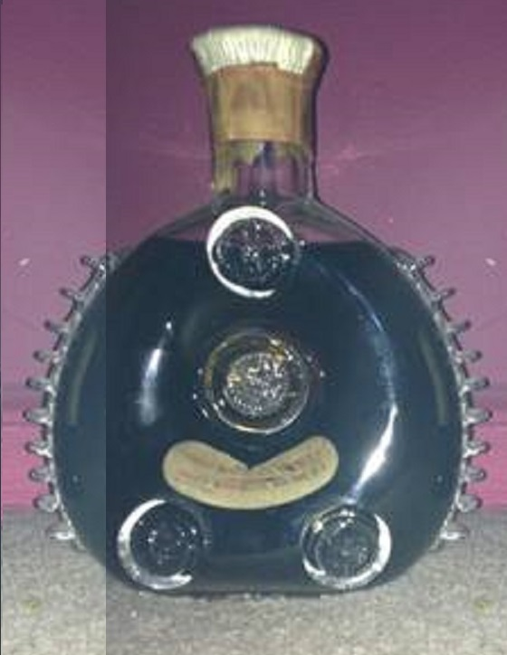
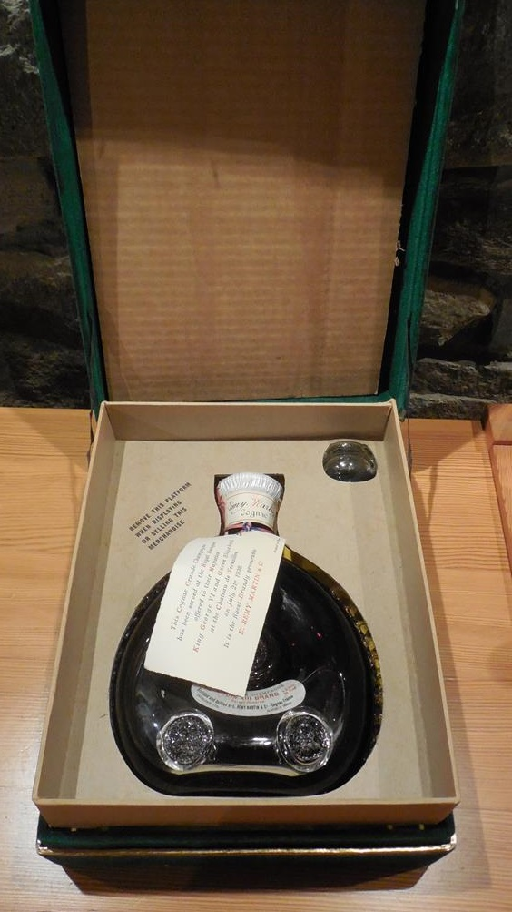
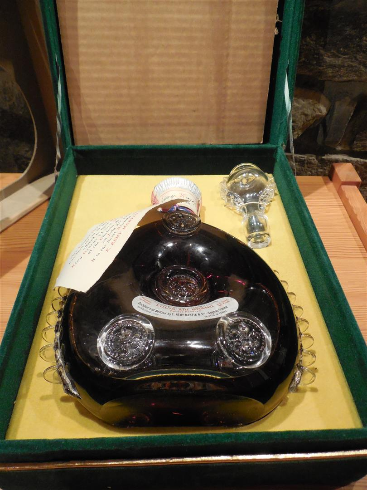
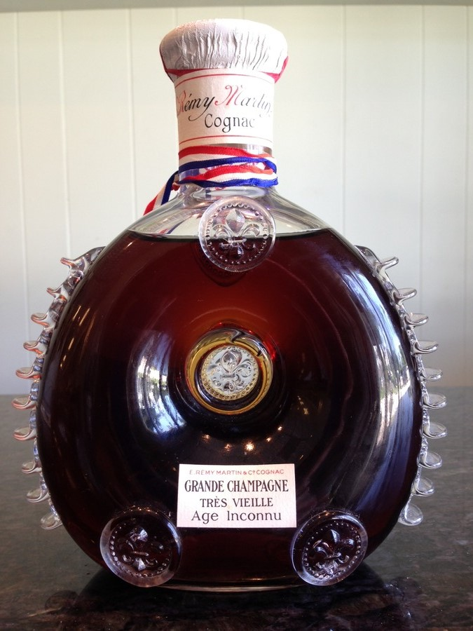
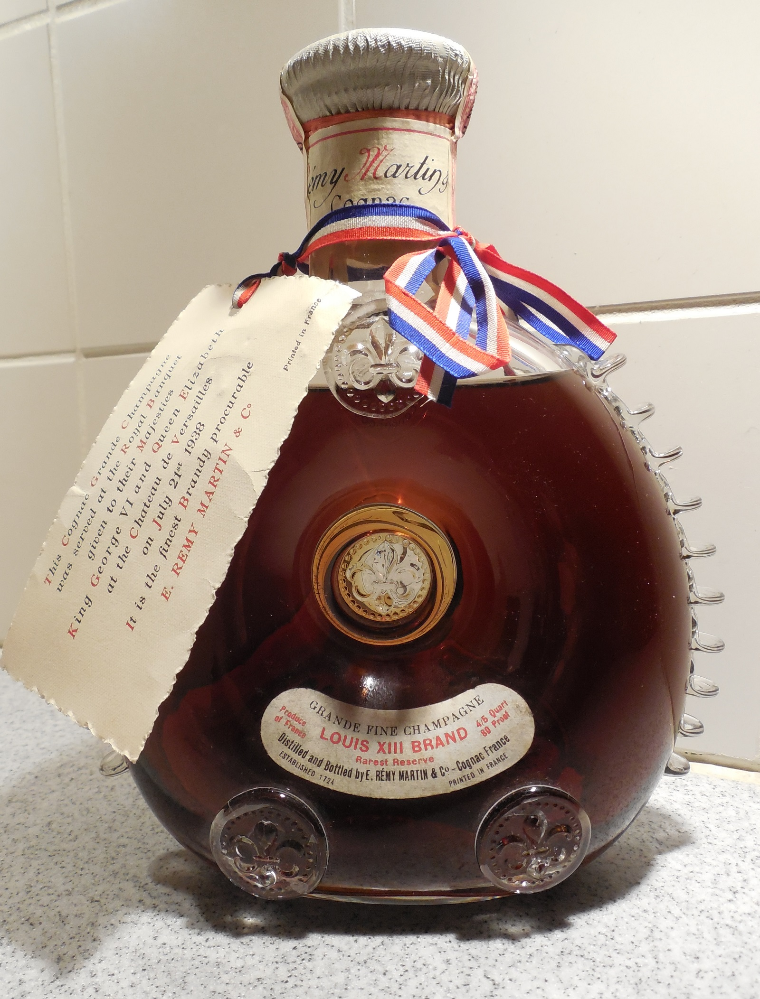
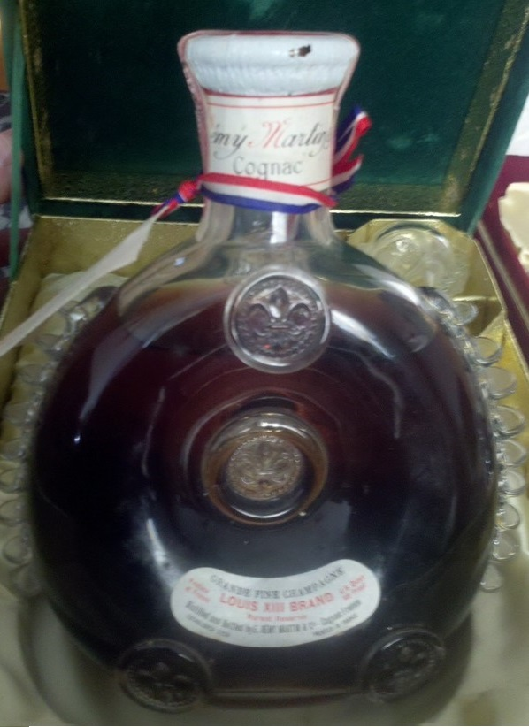
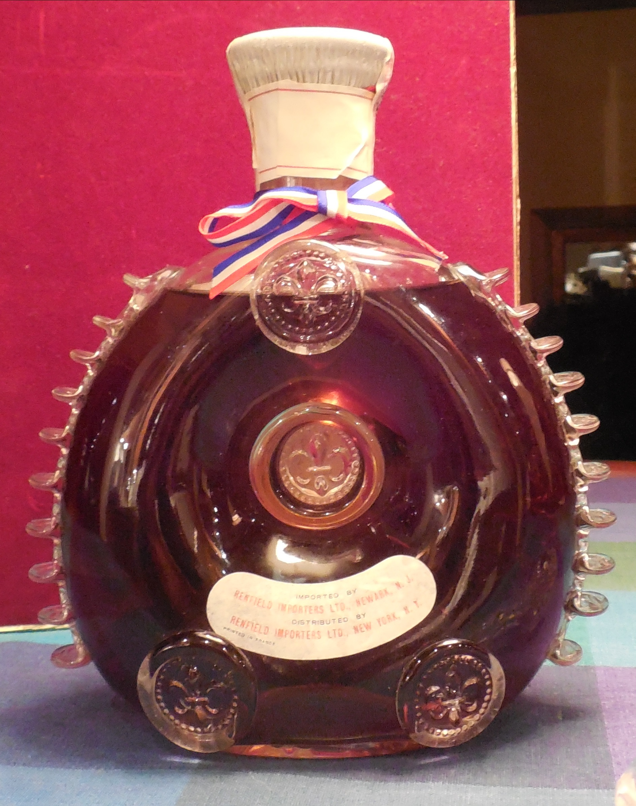

04EuropeUSA
1946–1961
Post-War
Two Markets, Two Names — The Split Identity Era
- Baccarat logo on the base only after about 1950. Earlier bottles have the name only
- US: bean-shaped “Louis XIII Brand, Rarest Reserve”. Europe: “Age Inconnu”
- US cases: green velvet (1946–58), then red cardboard with gold Centaur (1959–61)
- Europe: rattan basket
Full spec sheet & notes
| Manufacturer | Baccarat. No engraved logo until after ~1950 — logo added to base after that alongside the name. |
|---|---|
| Base (1946–50) | "Made in France by Baccarat" — no logo. Individually engraved numbers: 26, 28, 29, 32, 42, 55, 56, 103, 114. |
| Base (1951–61) | Baccarat logo added under base in addition to the name. Some bottles numbered, most not. |
| European Label | Rectangular "Age Inconnu" continues through the 1950s. Rattan basket packaging. |
| US Label | Bean-shaped "Louis XIII Brand — Rarest Reserve." Renfield Importers Ltd. listed on back label from 1946 onward. |
| US Packaging | 1946–56: Green velvet presentation cases with gold tassel; some had a mirror inside the lid. 1957–58: Plain green velvet, no gold accents. First 1957 Royal Visit Card. 1959–61: Red cardboard with silk liner, gold Centaur on lid. First origin drawing included. |
| Card | 1938 Royal Banquet Card through the 1950s. 1957 Royal Visit Card for newer sets. Both types coexist. |
| US Importer | Renfield Importers Ltd. (formed 1936, took over from Browne Vintners in 1940). |
US buyers knew it as "Louis XIII" while the rest of the world still bought "Age Inconnu." For roughly 30 years the two names coexisted in parallel — which is why sets with different labels are found on either side of the Atlantic.
Low serial numbers in the 1946–1950 range reflect small yearly production restarting after the war. The rule that "no logo = pre-WW2" is wrong — many 1946–1950 bottles also lack the engraved logo.







